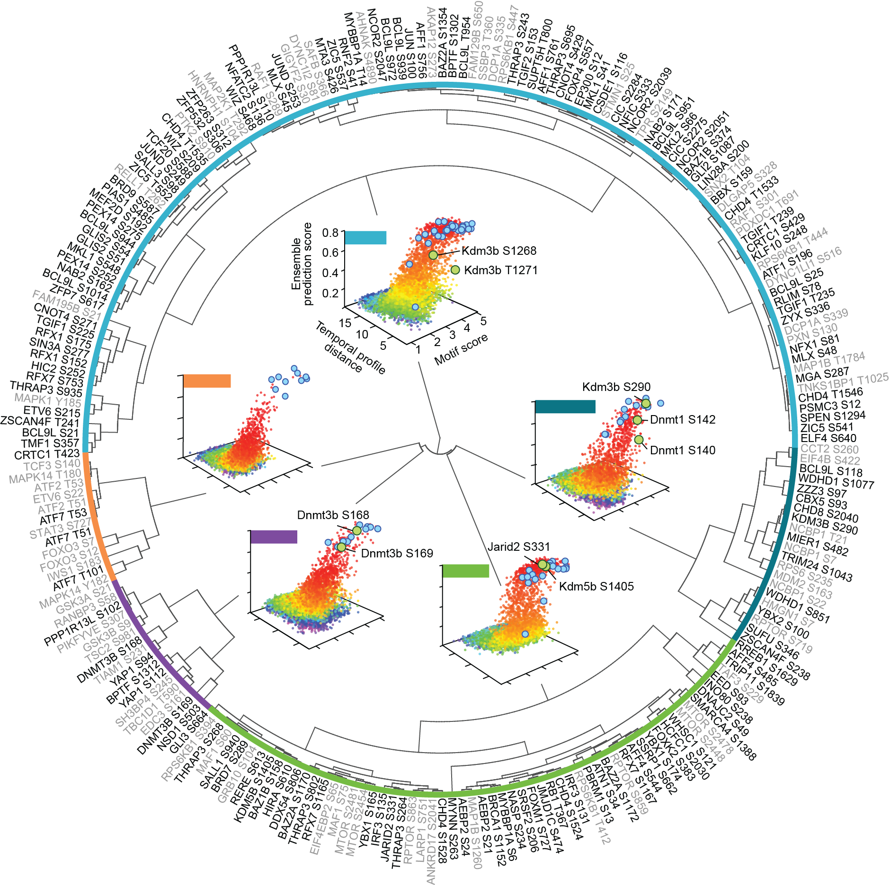

The computational trans-omics group led by Dr. Pengyi Yang
at Charles Perkins Centre (CPC), USyd, focuses on
understanding the trans-omics networks that cut through cell signaling, epigenomic, and transcriptional
regulations.
Systematic study of complex interactions in biological networks at a global viewpoint allows us to discover
fundamental principles that are not intuitive and to uncover global properties that can only be discovered by
integrating interactions between individual components. We develop computational methods and statistical models to
reconstruct and characterise signaling cascades, and epigenomic and transcriptional networks that underlie cellular
homeostasis, proliferation, differentiation, and cell-fate decisions. By integrating heterogeneous “–omics” data with the goal of generating testable hypotheses and predictions, our
researach contribute to the comprehensive understanding of the cross-talk among cell signaling,
epigenomic, and transcriptional regulations.

Our research focuses include: